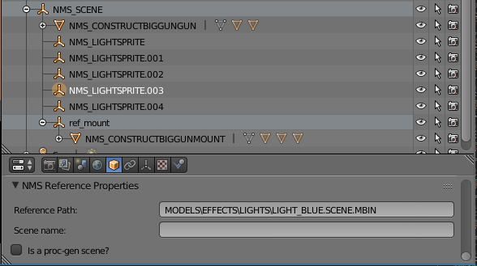
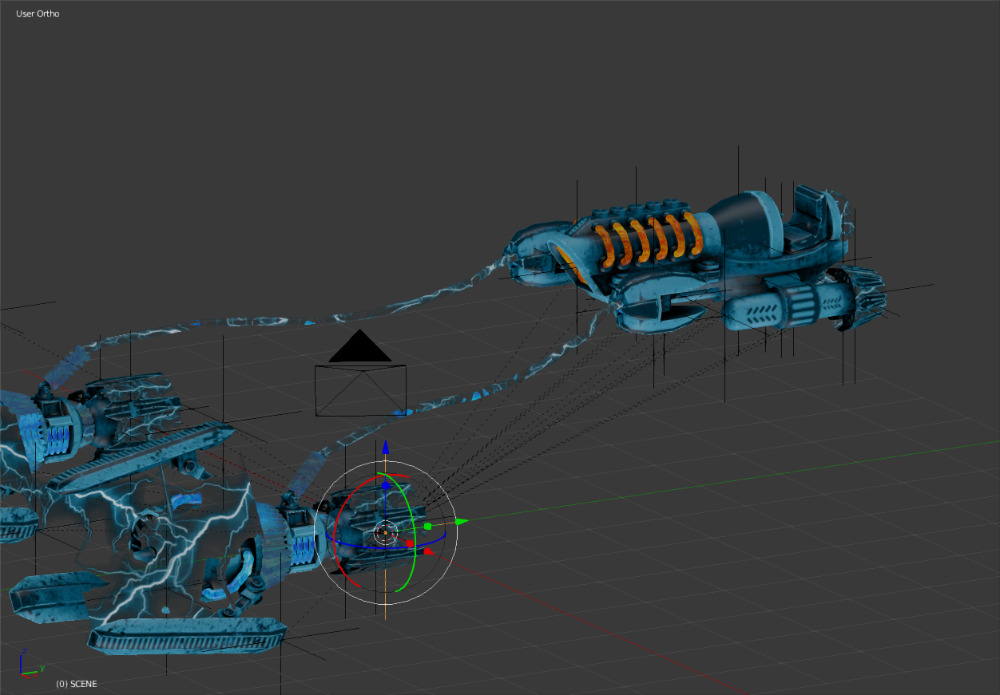

Exporting a Blender scene into a NMS compatible format
NMSDK's primary functionality is to convert scenes created in Blender into a format that NMS can load and display in the game. This can be anything from extra rocks or plants, to custom buildings that are scattered around on planets, new parts to be added to your base, or even new ships or freighters that can be flown or part of your fleet!
To provide this functionality a new panel has been added to the blender user interface (UI) to allow the user to enter any relevant information required to export a model to the format compatible with NMS.
Important info before you start
If you are importing an .obj file into Blender to be exported with NMSDK, ensure that the vertex split mode is set to Keep Vert Order (see below). If this is not done then you will need to manually triangulate the mesh before exporting.

Updating from old-format scenes
Previously all objects that were to be exported had to be a child of a node called NMS_SCENE. This requirement has been removed in the current version of NSMDK, as well as the requirement for an object to have NMS_ at the beginning of its name.
Old format scenes in blender can be updated to the new format by simply pressing the Change NMS Node type button in the NMSDK side panel:

Setting up
NMSDK uses a consistent node setup for both imported and exported scenes to allow the import > modify > export workflow to be as seamless as possible in the future.
Because of this, the Reference node type is given a special place.
Putting it simply, the Reference node type is used to denote a scene that is to be exported.
Reference nodes can either be at the top level of a scene (to indicate that you have multiple scenes to be exported that are potentially unrelated to each other), or nested within a scene (to indicate that the sub-scene may be referenced by other scenes).
To allow for flexibility, Reference nodes can be given two important properties, Reference path and Scene name.
Reference path is used to specify the path to an external scene file (relative to the PCBANKS folder).
Scene name is used to specify the name of the exported sub-scene.
This is the name of the scene that any child objects will be exported in.
To illustrate how the parameters work consider the following two images.


In the first image we can see that the object is a reference to a scene that already exists in the NMS game files.
In this case the scene will simply contain a REFERENCE node with the SCENEGRAPH property being the path to the specified scene.
In the second image we can see that the object has no reference path, but instead has a Scene name.
When the blender scene is exported, there will be two scenes exported. The main scene (with NMS_SCENE being the top-most reference object), and the ref_mount object which will export to a scene file named CONSTRUCTMOUNT.SCENE.MBIN.
The main scene will contain a REFERENCE node with the SCENEGRAPH property being the file path (again, relative to the PCBANKS folder) for this scene.
Once you have set at least one primary object that is to be the Reference node, you can specify any subsequent objects to be a Mesh, Locator, Reference, Light, Joint or Collision node.
These each have their own various uses and if you are familiar with NMS scenes it will be easy to specify what each object in a blender scene is.
Tips
For a detailed guide on the different node types, see the node docs. There are a few tips that should be kept in mind generally:
- Only objects that are the children of a
Referencenode will be exported. - Mesh collisions should be used sparingly. They take up more computational power and may cause your model to slow down the game. If you must use mesh collisions be sure to use very low poly models (in the 100's of verts, max). It is preferrential to use primitive type collision objects when possible.
- When exporting an object it may be exported with edges and faces messed up. This happens when the mesh is improperly triangulated. Whilst NMSDK should triangulate a mesh properly it sometimes doesn't work as well as it should. You can see the issue in the following two images (c/o Krem):


As we can see, the orange region doesn't look the same in the model viewer as it does in blender before export.
To fix the issue, we can select the mesh in blender, change to EDIT mode, then select Mesh > Faces > Triangulate Faces (see image below)

On re-export the issue should be fixed.